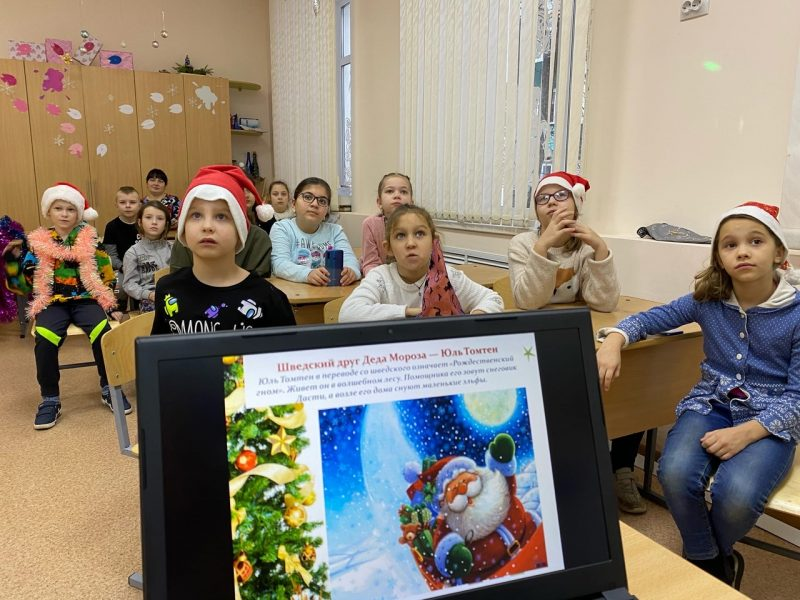
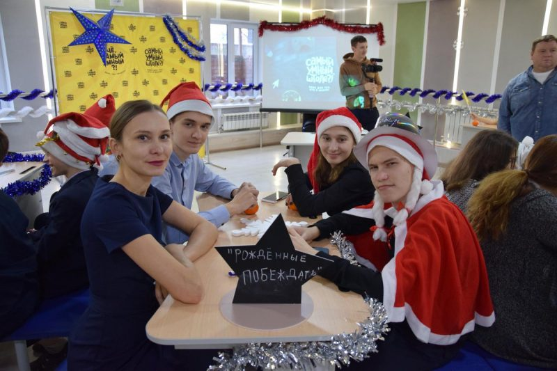
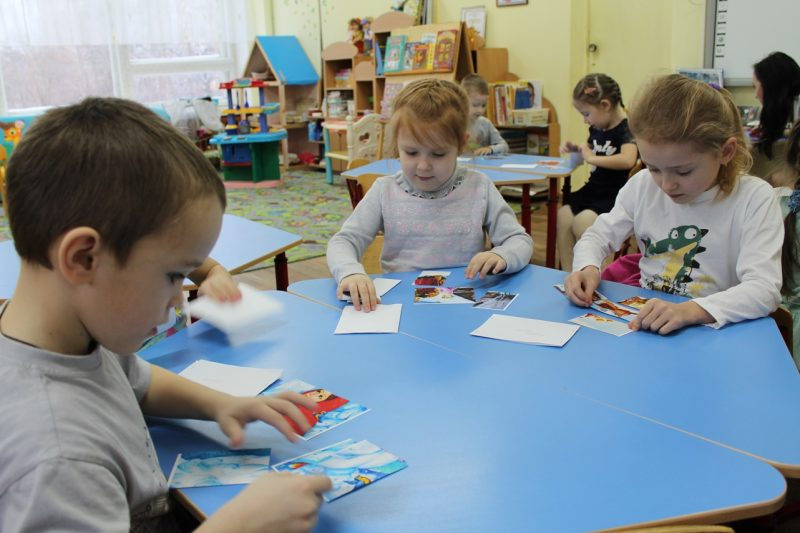
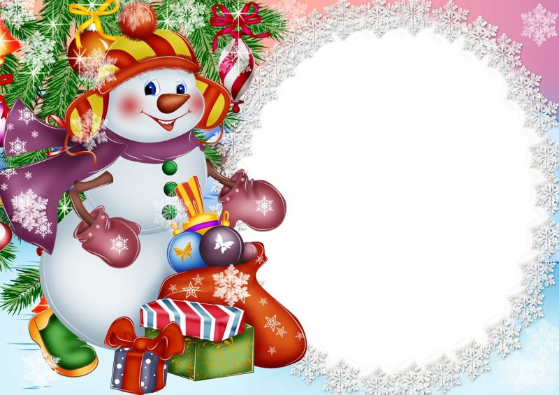
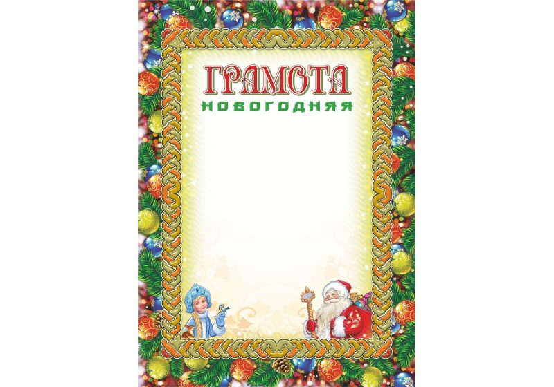
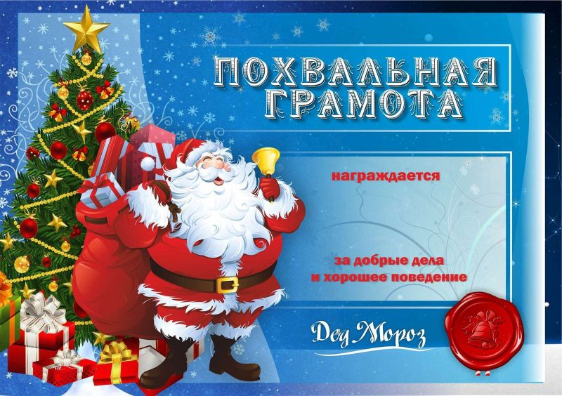

Новый год – праздник, в честь которого ежегодно устраивают самые шумные вечеринки и мероприятия.
Дети любят необычный формат празднования, на котором их привлекают к интересным развлекательным программам.
Частью такой программы может стать Новогодняя викторина.
Цель игры – развеселить и рассказать детям о традициях и интересных фактах о новогодних традициях.
Викторину легко организовать для совсем крох дошкольного возраста, учащихся школы или даже взрослых.
Мы составила примерный перечень вопросов, который вы можете использовать для теста по теме Нового года.

Подарков у Деда Мороза много, а в чём он их носит? (в мешке)
Кто напарник Деда Мороза? (Снегурочка)
Очень часто Деда Мороза в рассказах называют иначе: как? (Морозко)
Куда ходят родители, чтобы купить настоящую, красивую, пышную ёлку?( на елочном базаре)
Каждый год этого большого белого друга можно встретить в любом дворе? (снеговика)
Что надевают на голову снеговику вместо шапки? (ведро)
Что использует Дед Мороз в качестве автомобиля? (тройку лошадей)
И взрослые, и молодые любят вокруг ёлки что делать? (водят хоровод)
Засыпая в Новогоднюю ночь каждый ребёнок больше всего ждёт… (подарков)
Самый яркий и любимый праздник зимой у людей? (Новый год)
С крыши капает, на лоб падает? (сосулька)
Лучший друг Деда Мороза и Снегурочки? (снеговик)
Заграничное имя Деда Мороза? (Санта Клаус)
Что в Новогоднюю ночь повсюду взрывается ярким разными красками? (фейерверк)
Куда Дед Мороз прячет подарки для малышей и родителей? (под ёлку)
Какой город-родина нашего отечественного Деда Мороза? (Великий Устюг)
Почему именно на 3 лошадях ездит Дед Мороз, с чем они ассоциируются? (названия зимних месяцев)
Если наш Дед Мороз катается на лошадях, то на чём – Санта Клаус? (олени)
Самая известная и популярная новогодняя песня, которую знает каждый? (В лесу родилась елочка…)
Назовите любое отличие Деда Мороза и Санта Клауса? (Дед Мороз носит шубу, Санта Клаус брючный костюм)
Каких двух фигурок ставят семьи под новогоднюю ёлку? (Дед Мороз и Снегурочка)
Назовите точную дату и время, когда наступает Новый год? (01.01 00:00)
Что каждый делает в Новогоднюю ночь, когда бьют куранты? (загадывают желание)
Красавица-ёлка всегда имеет на своей «голове» украшение в виде… (звезды)
В каком месте произрастает ёлка? (в лесу)
Куда можно прийти зимой, чтобы покататься на коньках? (на катке)
Каждое окно зимой украшено… (узорами)
Что пишут все дети, чтобы рассказать о своих желаниях Деду Морозу? (письмо)
На каждой ёлке растут… (шишки)
Какой самый популярный зимний транспорт для детей во все времена? (санки)
Сколько раз куранты ударяют в новогоднюю ночь? (двенадцать)
Перечислите 3 любые сказки, где главный герой – Дед Мороз? (Морозко, Два Мороза, Дед Мороз и серый волк и т.д.)
Что носит на ногах Дед Мороз зимой? (валенки)
Что носит на ногах Дед Мороз летом? (лапти)
У какой королевы вместо сердца осколки льда? (Снежной)
Когда День рождения Деда Мороза? (18 ноября)
После Нового года празднуют… (Рождество)
Кто играл роль Деда Мороза в мультике «Ну погоди!»? (Заяц)
Что традиционно держит в руках Дед Мороз? (посох)
Какой месяц зимний по древнерусскому был снеговиком? (Январь)
Вместо носа у снеговика часто бывает… (морковка)
Самое популярное холодное сладкое угощение? (мороженое)
Запах какого фрукта ассоциируется с Новым годом? (мандарин)
Из-за чего люди зимой на улице часто падают? (гололёд)
Где расположена ледяная избушка, в которой проживает зима? (у леса на опушке)
Что находится внутри новогодней хлопушки? (конфетти)
Кем приходится Снегурочка Деду Морозу? (внучкой)
Что зимой звезда, а весной – вода? (снежинка)
Какой любимый цвет у Деда Мороза? (красный)
Где родилась ёлка? (в лесу)
Где зимой вы можете увидеть дождик? (на ёлке)
На счёт три на новогодней ёлке горят… (огоньки)
Блестящие палочки с искрами, которые зажигают взрослые, это? (бенгальские огоньки)
Мягкие, но холодные белоснежные зимние подушки – это? (сугробы)
Какой месяц зимы – месяц ветров? (Февраль)
Сколько дней в декабре? (31)
Что необходимо надеть, чтобы встречать Новый год? (праздничный костюм)
Взамен подарков дети дарят Деду Морозу? (стихи и песни)
На чём маленькие детки рассказывают стихи Деду Морозу? (на табуретке)
Самый популярный советский фильм в новогоднюю ночь? (Ирония судьбы или с лёгким паром!)
Данные вопросы будут интересны детям от 5-го класса

Кто по традиции рисует зимние узоры на окнах? (мороз)
Что любит ёлка? (хороводы и песни)
Она имеется не только у собак и кошек, но и ёлки? (лапа)
Где растут новогодние прянички? (на ёлке)
Что кричат дети, когда зовут Деда Мороза (Дед Мороз, выходи!)
Кто играл Снегурочку в мультфильме «Ну, погоди!»? (Волк)
Какого цвета зима? (белого)
Мультфильм, где мальчик нашёл волшебный билет на поезд? (Полярный экспресс)
Чего боится Снегурочка? (огня)
Чего боится ёлочка? (топора)
Как называется устройство для того, чтобы ёлка ровно стояла? (тренога)
В какой сказке девочка замёрзла в лесу? (Морозко)
Что вешают на камин, чтобы получить подарки? (новогодние сапожки)
Волшебные американские маленькие персонажи – кто они? (эльфы)
Какого цвета щёчки у снегурочки? (красные)
Какого цвета нос у Деда Мороза? (Дед Мороз – синий нос)
Как называется родина Санта Клауса в других странах, например, Америке? (Лапландия)
Кто иногда заменяет Деда Мороза? (родители)
Без чего Дед Мороз не похож на себя? (без бороды)
Почему у Деда Мороза нет жены? (произвольный ответ для юмора)
Используйте вопросы для сценария новогоднего праздника. Материалы с вопросами, историями и загадками отлично подойдут для развлекательной программы и конкурсов для любого возраста.



